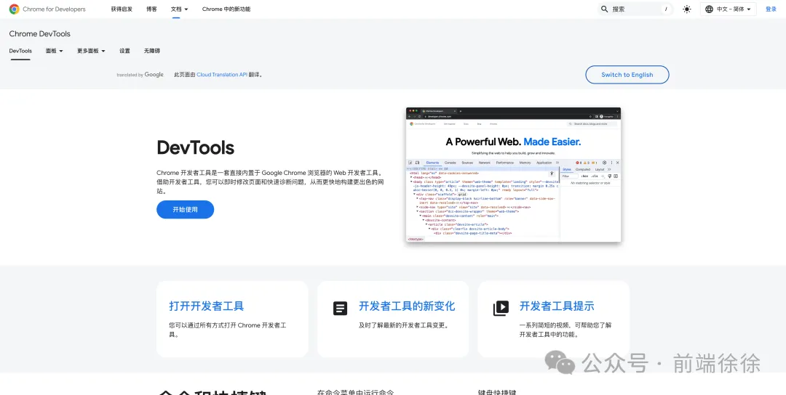
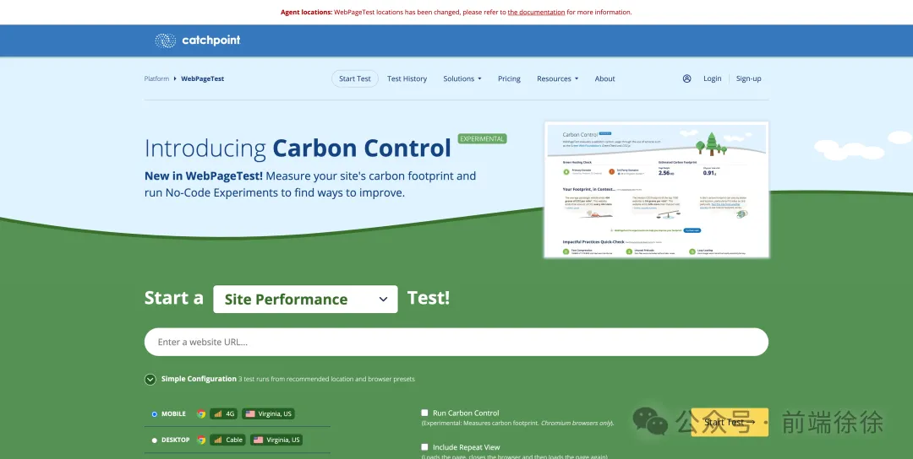
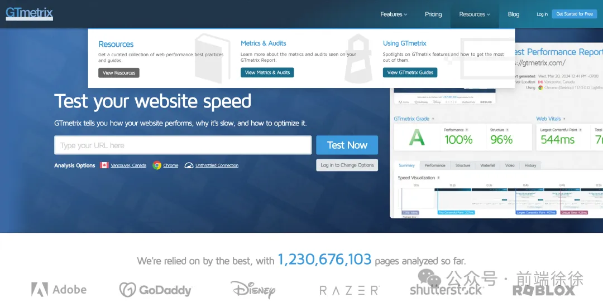
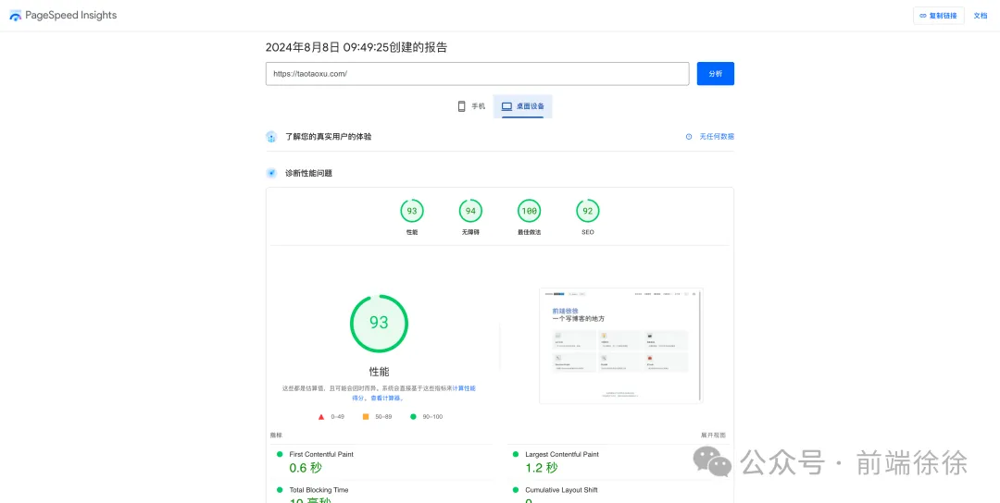
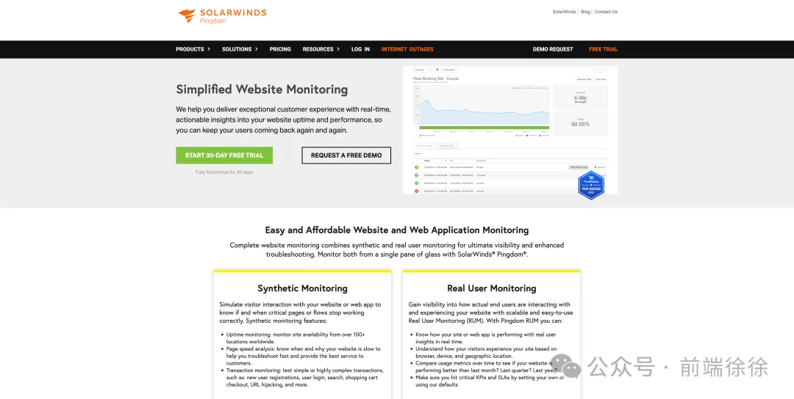
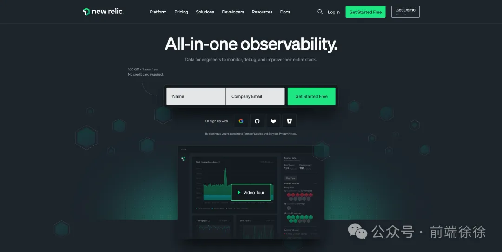
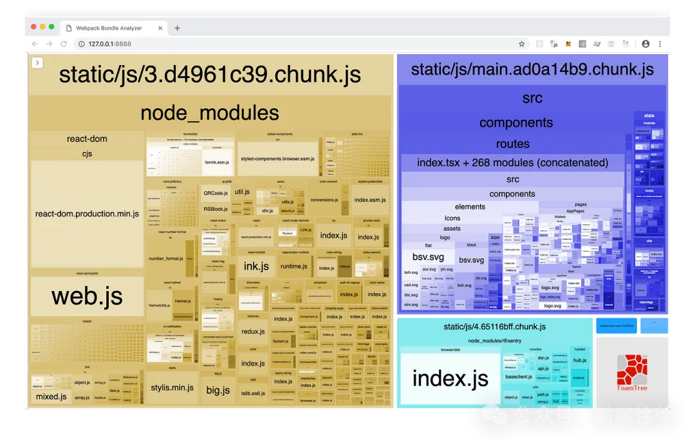

1. Chrome DevTools

网址：https://developer.chrome.com/docs/devtools
Chrome 浏览器自带的这个工具简直就是前端开发的神器!
- Network 面板: 这就像是给你的网站装了个"监控摄像头"。你可以看到每个请求的详细信息，包括它们的大小、加载时间等。慢的文件?一眼就能认出来!
- Performance 面板: 这个更厉害，它能记录你的页面加载的整个过程。你可以看到 JS 执行、页面渲染等各个阶段花了多长时间。找出性能瓶颈 so easy!
- Lighthouse: 这简直就是一键式的网站体检工具。它会自动分析你的网站，然后给出一份详细的"体检报告"，包括性能、可访问性、SEO 等方面的建议。新手友好，大神也喜欢!
使用场景：
- 日常开发调试
- 性能问题初步诊断
- 网络请求分析
- JavaScript 性能分析
优点：
- 全面集成：网络、性能、内存、安全，应有尽有。
- 实时分析：可以实时查看变化，对动态加载的 SPA 特别有用。
- 免费且强大：不花一分钱就能搞定大部分问题。
- 持续更新：Chrome 团队一直在添加新功能。
缺点：
- 学习曲线稍陡：功能太多，新手可能会觉得眼花缭乱。
- 只能分析 Chrome：其他浏览器可能表现不同。
- 本地分析：不能直接测试其他地理位置的性能。
2. WebPageTest

网址：https://www.webpagetest.org/
这个在线工具超级全面!你可以选择从世界各地的不同位置、用不同的浏览器和网络条件来测试你的网站。它会给你一个超详细的报告，包括:
- 瀑布图: 直观地展示了每个资源的加载时间。
- 性能评分: 从 A 到 F 打分，让你一目了然。
- 优化建议: 告诉你该如何提升速度。
使用场景：
- 网站上线前的全面检测
- 不同地理位置的性能测试
- 竞品网站性能对比
- 移动端性能测试
优点：
- 全球化测试：可以模拟全球各地用户的访问情况。
- 多设备支持：从高端电脑到低端手机，全覆盖。
- 详细报告：瀑布图、视频回放等，超直观。
- 自定义测试：可以设置复杂的测试场景。
缺点：
- 公共实例可能排队久：免费的午饭不好吃啊，兄弟们。
- 配置复杂：高级功能需要一定的专业知识。
- 不适合实时监控：更适合周期性的大测试
有了他简直就是给你的网站做了一次环球旅行+全身体检!
3. GTmetrix

网址：https://gtmetrix.com/
GTmetrix 和 WebPageTest 有点像，但它的报告更加通俗易懂。它不仅会告诉你哪里慢，还会给出具体的优化建议。比如:
- "嘿，你的图片太大了，压缩一下吧!"
- "这个 JavaScript 文件可以延迟加载哦~"
而且它还能帮你追踪网站的性能变化，简直就是你优化过程中的好帮手! 使用场景：
- 网站性能的快速评估
- 获取具体的优化建议
- 性能变化的长期跟踪
- 对比优化前后的效果
优点：
- 用户友好：界面直观，报告易懂。
- actionable 建议：直接告诉你该怎么优化。
- 历史记录：可以跟踪网站性能的变化趋势。
- 有 PDF 报告：方便分享给不懂技术的老板或客户。
缺点：
- 免费版功能受限：想要更多功能得掏腰包。
- 测试服务器位置有限：不如 WebPageTest 全面。
- 有时候建议比较笼统：可能需要进一步研究。
4. PageSpeed Insights

网址：https://pagespeed.web.dev/
这是 Google 自家的工具，所以如果你想让你的网站在 Google 上表现更好，一定要用它!
- 移动端和桌面端分开测试。
- 给出实验室数据和真实用户数据。
- 提供详细的优化建议。
使用场景：
- SEO 优化
- 移动端性能优化
- 获取符合 Google 标准的优化建议
- 真实用户体验数据分析
优点：
- Google 背书：这可是 Google 亲儿子，对 SEO 特别有帮助。
- 移动端优先：移动端性能分析特别靠谱。
- 实验室+实际数据：理论结合实践，分析更全面。
- 持续更新：随着 Web 技术发展不断更新标准。
缺点：
- 有时候建议难以实施：理想很丰满，现实很骨感。
- 评分标准时有变化：今天的 A+可能明天就成 B 了。
- 功能相对单一：专注于性能，其他方面涉及较少。
用了这个，就等于直接问 Google: "我该怎么优化才能在你这儿混得好?"
5. Pingdom

Pingdom 让你可以从世界各地测试你的网站速度。它的特点是:
- 界面超级直观。
- 可以设置定期测试，监控网站性能变化。
- 给出每个页面元素的加载时间。
使用场景：
- 全球化网站的性能测试
- 长期监控网站可用性
- 网站速度的定期检查
- 简单直观的性能报告
优点：
- 全球化视角：多个测试点，全面了解全球性能。
- 长期监控：可以设置定期测试，监控网站健康状况。
- 报警功能：网站出问题立马通知你。
- 直观报告：对非技术人员也很友好。
缺点：
- 价格偏高：功能强大，但是价格也不菲。
- 偶尔不稳定：测试结果有时会波动。
- 深度分析有限：比起专业工具，细节可能不够。
用它来监控你的网站，就像给你的网站请了个 24 小时不间断的保安!
6. New Relic

网址：https://newrelic.com/
New Relic 更适合那些大型应用。它可以:
- 实时监控应用性能。
- 深入分析每个请求。
- 帮你找出性能问题的根源。
使用场景：
- 大型、复杂应用的性能监控
- 分布式系统的问题诊断
- 用户体验的实时分析
- 应用性能的长期优化
优点：
- 全栈监控：前端、后端、数据库，一网打尽。
- 实时分析：问题发生时立即定位。
- AI 辅助：智能报警和问题定位。
- 自定义仪表盘：想看啥数据就看啥。
缺点：
- 学习成本高：功能强大的同时也意味着复杂。
- 价格不菲：小项目可能负担不起。
- 数据量大：可能需要专人分析和维护。
用 New Relic 监控你的应用，就像给你的网站装了一个超级智能的监控系统!
7. Webpack Bundle Analyzer
包体积可视化工具

网址：https://github.com/webpack-contrib/webpack-bundle-analyzer
这个工具主要是给用 Webpack 的同学用的。它可以:
- 可视化你的 bundle。
- 帮你找出哪些模块占用了太多空间。
- 辅助你优化你的代码分割策略。
使用场景：
- 分析和优化 Webpack 打包结果
- 发现并移除未使用的代码
- 优化代码分割策略
- 减小最终 bundle 的体积
优点：
- 直观可视化：包的体积一目了然。
- 交互式探索：可以深入查看每个模块。
- 易于集成：和 Webpack 无缝配合。
- 帮助做决策：对于代码分割和懒加载很有帮助。
缺点：
- 只针对 Webpack：其他构建工具可能需要寻找替代品。
- 可能影响构建速度：在大型项目中可能会稍微降低构建速度。
- 需要一定的 Webpack 知识：新手可能看不太懂。
用了这个工具，你的 bundle 就再也藏不住了，该减肥的一目了然!